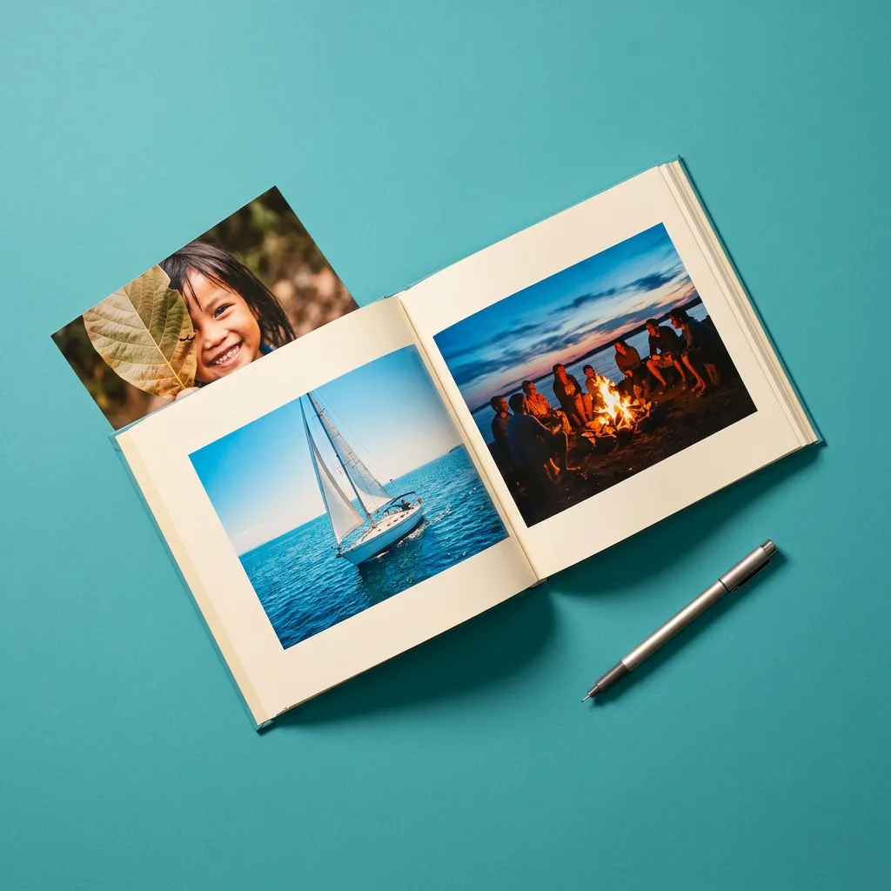
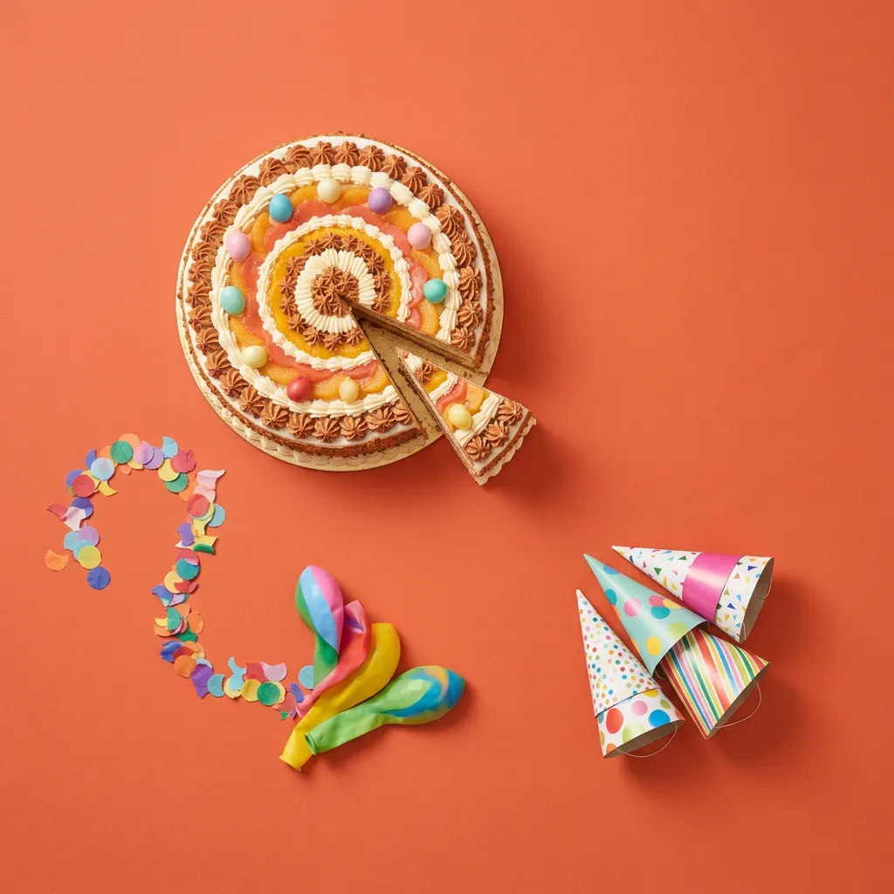

Een oude passie opnieuw beleven: naar de beenhouwerij
Waarom: zij kiest de charcuterie en werkt mee van winkel tot soep. De hele leefgroep proeft het resultaat.
De D van Doen staat voor activerend werken — bewoners zelf laten doen, in kleine stapjes, zodat ze vertrouwen opbouwen en het plezier van het bezig zijn zelf ervaren.
We moeten de bewoner bezighouden
Wat wil deze persoon vandaag ondernemen?
Laat bewoners zelf doen, ook als het langzamer gaat. Zelfs één handeling is al een succes.
Bouw activiteiten op in kleine stapjes die succeservaringen opleveren.
Geef expliciet waardering voor elke bijdrage, hoe klein ook.
Pas materiaal of omgeving aan zodat zelf doen mogelijk blijft.
Deze fiches zijn schoolvoorbeelden van bewoners die zelf meedoen. Gekozen door Maite en Nadine, met telkens één zin waarom.
Waarom: zij kiest de charcuterie en werkt mee van winkel tot soep. De hele leefgroep proeft het resultaat.

Waarom: schuren en verven brengt klussers weer echt aan het werk, en het resultaat blijft in huis staan.

Waarom: de bewoners organiseren het feest zelf, van de intrede tot het programma. Niemand kijkt alleen toe.
Eén vraag tijdens een gesprekskaartenmoment, en de tafel stond in vuur en vlam. Zoveel bewoners die tot op late leeftijd zijn blijven zwemmen.
Dus belde het team een revalidatiecentrum met een lift tot in het bad. En gingen ze opnieuw zwemmen.
Begint bij een verhaal, eindigt in doen.
Elke weekdag na het middagmaal.
De route ligt vast en de begeleidster duwt. Er wordt een halfuur gestapt en daarna gaat iedereen terug naar binnen.
De groep beslist onderweg welke kant het opgaat. Onderweg wordt er iets gehaald, brood of een krant. Louis duwt een stukje zelf.
Eén mogelijke versie. Niet de juiste.
Vijf vertrekpunten, gekozen door het team. Alles op dit lijstje wordt in de vormingen gebruikt of aanbevolen.
Fiches uit alle initiatieven samen, zolang ze bewoners zelf laten meedoen.
Café Chantant legt de focus op reminiscentie en gezelligheid creëren in de ruimte.
Organiseer een bedankingsactiviteit met bewoners.
De benodigdheden knutsel je zelf met de bewoners, nadien maak je postkaartjes om te versturen.
De geur van versgemalen bonen roept gezelligheid, warmte en huiselijkheid op.
Tover de tuin en voorgevel om tot een lichtspektakel als teken van verbondenheid.
Gezellig samen een tochtje maken buiten het WZC met een Riksja, duofiets of rolstoelfiets.
Zes initiatieven bundelen fiches die aanzetten tot doen.